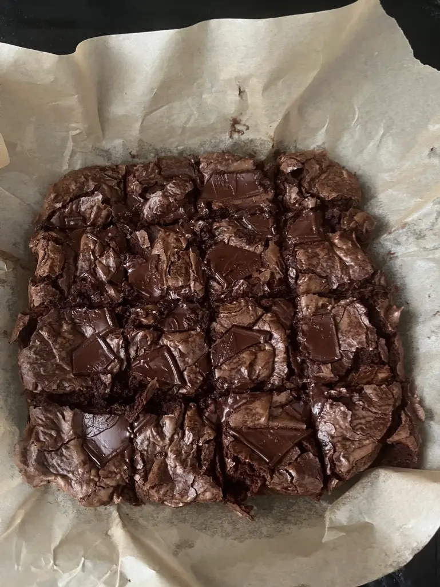
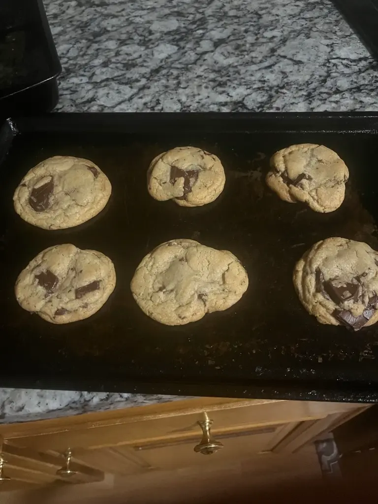

Hello, my name is Brenton and welcome to my recipe website.
I have been cooking and baking since almost 11. I was making brookies, and that was what started this hobby of mine. There is just something satisying about cooking, especially with food that you like to make or eat. It's just fun and exciting.
The brownies and cookies I make are the deserts at the top of the site. They won't be the focus, but I think people should see where I got my hobby of cooking.
For some dishes, you can cook with your family members. That can be good as that means that you can bond with them. It can also mean you can talk with them about whatever you want, so that's fun. Although, if they are not a fan of cooking, you may want to find another family activity.
When you cook and get it right, you can make a cheeseburger or pizza with less risk of disappointment. That's because in fast food, sometimes what you ordered is not up to your standards. So, now I can share some recipes with some of you and if you like them, you can try them out for yourself!
Feel free to alter or change some of them if you don't want some of the ingredients in them.
You can find the recipes at the top of the site.